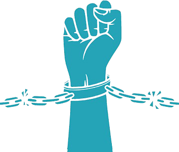
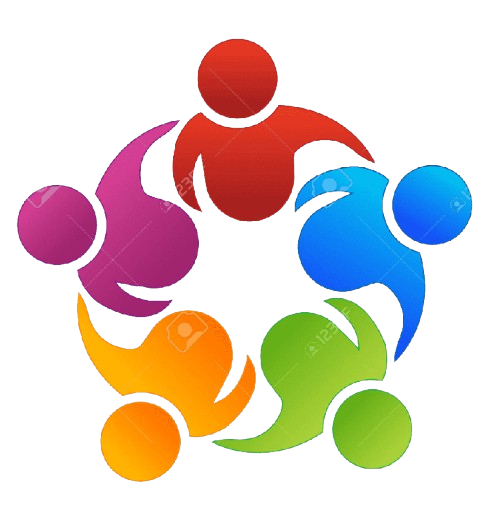
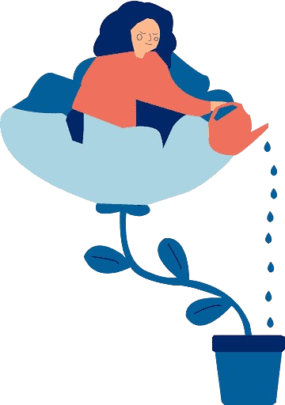
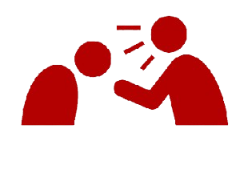
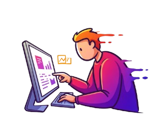
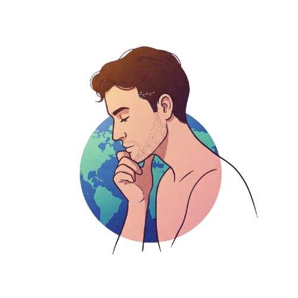

Bonjour, je m'appelle Ulysse Rautureau et bienvenue sur mon Portfolio.
Je suis actuellement étudiant en 5ème année à l'école d'ingénieur ESAIP située à Angers.
Ce qui me motive le plus ? Transformer des idées en solutions concrètes, utiles et durables.
Que ce soit à travers une application mobile, un projet de groupe, ou une initiative écoresponsable, j’aime relever des défis qui ont du sens.
Mes Valeurs / Anti-valeurs

Liberté / Autonomie
Pouvoir s'exprimer et se développer librement est essentiel pour la productivité et l'épanouissement.

Esprit d'équipe
Le travail collaboratif est fondamental pour relever les défis et décupler les compétences individuelles.

[Anti-valeur] Égoïsme
L'attention portée aux autres est aussi importante que celle portée à soi-même pour l'intégration et l'évolution personnelle.

[Anti-valeur] Passivité
Je m'investis pleinement dans mes projets et attends un engagement similaire de mes collaborateurs.
Comment je me vois dans 5 ans

Ambitions Professionnelles
J'aspire à devenir ingénieur et à identifier le domaine qui me passionne réellement. Que ce soit dans une startup innovante ou une grande entreprise, j'espère mener à bien des projets d'envergure.

Objectifs Personnels
Je recherche un environnement de travail stimulant où l'esprit d'équipe et le contact social sont valorisés. Travailler à l'international est également un objectif pour enrichir ma culture et mes compétences linguistiques.
Daniel lewis
Le contenu sera chargé dynamiquement par JavaScript.
Lycée Saint-Aubin La Salle, Verrières-en-Anjou (49)
2017 - 2020
Baccalauréat STI2D - Option Systèmes d'Information et Numérique (SIN)
Expériences Professionnelles & Projets
Stage - Programmeur Python & Analyse de Données Web
Juillet - Août 2024 (Stage International - Vilnius Tech, Lituanie)
- Optimisation des performances de traitement de données web.
- Analyse et modélisation de la charge système sur serveurs web.
Stage - Pilote d'Activité Réseau (PAR)
Avril - Juin 2023 (Orange - Direction Technique et SI, Nantes)
- Suivi et gestion des projets de production réseau (fibre optique).
- Analyse de données d'activité des partenaires techniciens.
- Reporting et communication sur l'avancement des déploiements.
- Cours suivis : Algorithmes d'IA, Génie logiciel, Bases de données avancées, Communication technique, Gestion de projet (liste non exhaustive).
- Développement de compétences interculturelles et linguistiques (Anglais C1, Espagnol B2).
Rôle : Membre Actif Owlympe(2022-2023) | Secrétaire Howl'rizon(2024-2025)
Contexte : Animation de la vie étudiante de l'école (campus Angers).
Réalisations clés :
Management d'une équipe d'une vingtaine de membres.
Organisation et coordination de plus d'événements majeurs (intégration, gala, etc.).
Gestion d'un budget annuel et de matériel
Communication interne et externe, représentation des étudiants.
Recherche de partenariats et sponsors.
Mise en place d'un système de prévention et sécurité pour les étudiants (foulards bleus)
Cette expérience, qui s’est étendue sur trois années, m’a permis de découvrir une véritable passion pour l’organisation événementielle. J’ai particulièrement apprécié veiller à ce que chaque événement soit non seulement agréable pour les étudiants, mais aussi sécurisé et encadré.
La mise en place du système de foulard bleu, ainsi que l’organisation de nombreux ateliers de prévention et de sensibilisation, ont contribué à faire de notre école l’une des plus respectueuses et appréciées d’Angers.
Contexte : Compétition nationale de 72h axée sur l'éco-conception de solutions numériques.
Objectif : Proposer une solution innovante et éco-responsable pour répondre à une problématique donnée (ex: réduire l'empreinte carbone d'un application en ligne).
Réalisations :
Analyse de la problématique et brainstorming en équipe.
Conception d'une architecture logicielle optimisée.
Développement d'un prototype fonctionnel (technologies variables selon le sujet).
Mesure et estimation de l'impact environnemental de la solution.
Présentation finale devant un jury.
Résultat : Classement dans le Top 20 sur plus de 100 équipes participantes.
Compétences développées : Éco-conception logicielle, travail en équipe sous pression, créativité, prototypage rapide, analyse d'impact.
Projet : Activ'ESAIP
Développeur Full-Stack et Visualisation de Données (Projet Académique, 2025)
Contexte : Projet universitaire en équipe visant à créer une application web pour la visualisation de données d'une station de traitement chez Louis Tessier.
Fonctionnalités :
Analyse de la problématique et création d'un cahier des charges adapté.
Conception d'une architecture logicielle optimisée et érgonomique.
Développement d'un prototype fonctionnel.
Déploiement en interne pour les activités de production.